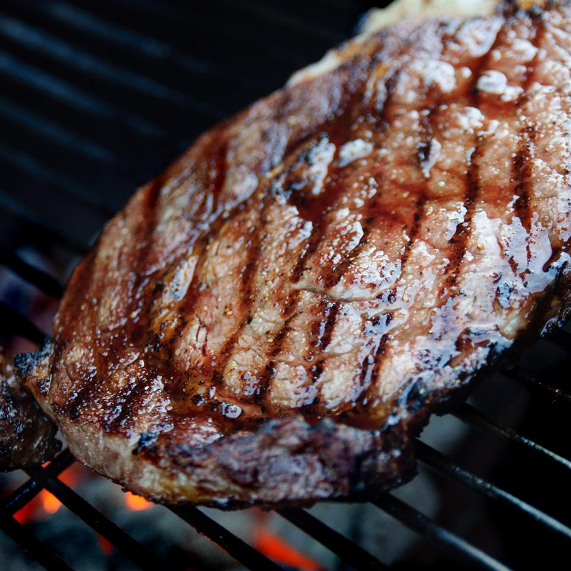

Steak Recipe

Description
Very tasty recipe for a sirloin steak. It should take about 45 minutes to make and yield 2 servings
Ingredients
- 20 ounces of poterhouse steak
- 1 teaspoon of olive oil
- 1 tablespoon of meat tenderizer
- 1 teaspoon steak seasoning
Steps
-
Place steak on a plate and coat lightly with olive oil. Rub steak with meat tenderizer.
Sprinkle steak with Canadian steak seasoning and gently rub into steak.
Cover with plastic wrap and let stand for 20 minutes.
-
Preheat a grill for high heat. When the grill is hot, lightly oil the grate.
-
Unwrap steaks and grill on open flame or charcoal grill for 3 to 5 minutes per side, or to your desired degree of doneness.
Return to Main Page